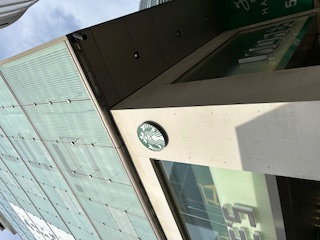
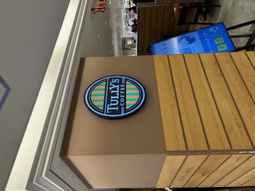
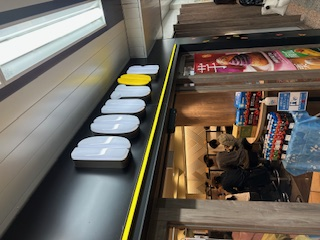

横浜駅界隈で撮影したカフェ看板（2025/10/10）
撮影日：2025年10月10日 ／ 場所：横浜駅周辺

スターバックス：白い壁に円形ロゴが映える、横浜駅近くの外観。（2025/10/10撮影）
場所：横浜駅周辺

タリーズ：商業施設内のカラフルなロゴがアクセントの落ち着いた店舗。（2025/10/10撮影）
場所：横浜駅周辺

ドトール：入口の黄色ラインが目を引く、気軽に立ち寄れるカジュアルカフェ。（2025/10/10撮影）
場所：横浜駅周辺
写真は横浜駅周辺で同日に撮影したカフェの看板です。展示やポートフォリオに使う場合は、画像ファイルをこのHTMLと同じフォルダに置いてください。